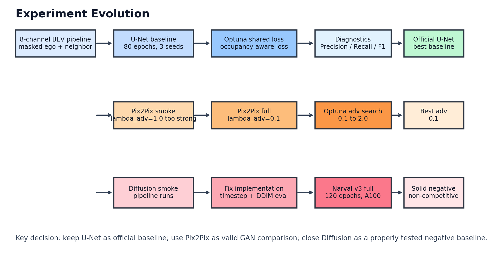
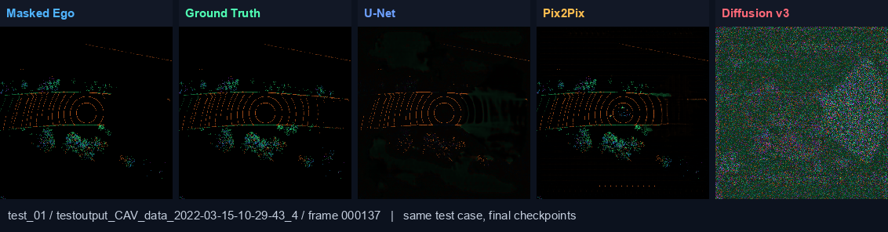
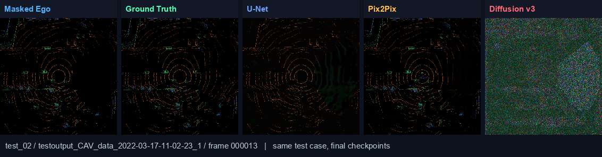
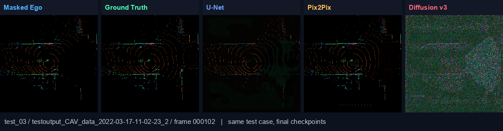
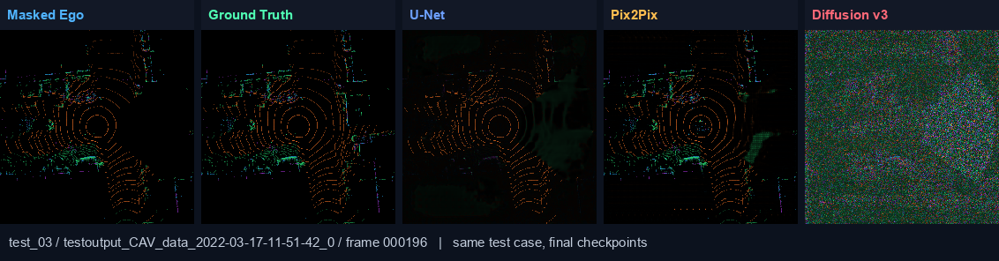

Project:
Cooperative masked BEV reconstruction using ego masked BEV + neighbor
BEV.
Report date:
2026-04-23
Main conclusion:
U-Net remains the strongest final baseline. Pix2Pix is a valid but
weaker GAN comparison. Diffusion v3 is now a properly tested negative
baseline.
lambda_adv = 0.1;
integer-scale weights such as 1.0 and 2.0 were
worse.
| Stage | What changed | Outcome |
|---|---|---|
| U-Net initial | Baseline BEV reconstruction | Established task pipeline and first baseline |
| U-Net balanced / occupancy-aware | Added weighted L1 + masked MSE + occupancy BCE | Improved masked structure recovery |
| U-Net Optuna | Tuned shared loss weights | Final shared loss selected |
| U-Net 3 seeds | Ran seed 42/43/44, 80 epochs | Official baseline: masked Occ-IoU 0.1494 +/- 0.0023 |
| Threshold + diagnostics | Added thresholded visualization, precision / recall / F1 | Found U-Net recall is high but false positives remain |
| Focal U-Net ablation | Replaced occ BCE with focal occupancy loss | Did not beat baseline; rejected |
| Layer-preserving U-Net probes | Tried per-bin/height terms, then light height loss | Stable but did not clearly improve layer preservation; baseline kept |
| Pix2Pix smoke | Initial lambda_adv=1.0 | Adversarial term too strong |
| Pix2Pix full | Reduced lambda_adv=0.1 | Best Pix2Pix single-seed run completed |
| Pix2Pix Optuna | Searched lambda_adv from 0.1 to 2.0, including integer-scale weights | Confirmed lambda_adv=0.1; 1.0/2.0 underperformed |
| Diffusion smoke | Local low-memory smoke | Pipeline ran, but early result was not meaningful |
| Diffusion v1 cloud | 80 target but timed out around epoch 31, proxy eval and no timestep conditioning | Invalid as final comparison |
| Diffusion v2 | Added timestep conditioning and DDIM evaluation | Correct pipeline, still weak |
| Diffusion v3 final | Fresh Narval A100 run, 120 epochs, LR schedule, grad clipping | Completed; solid negative baseline |
| Model | Seed(s) | Epochs | Final loss/objective | Masked Occ-IoU (higher better) | Masked RMSE (lower better) | Fused Full PSNR (higher better) | Status |
|---|---|---|---|---|---|---|---|
| U-Net | 42 / 43 / 44 | 80 | Shared reconstruction + occupancy loss | 0.1494 +/- 0.0023 | 0.05595 +/- 0.00010 | 33.66 +/- 0.02 | Best official baseline |
| Pix2Pix | 42 | 40 | 0.1 * adversarial + shared loss | 0.1317 | 0.06139 | 32.86 | Valid GAN comparison |
| Diffusion v3 | 42 | 120 | noise prediction + shared loss | 0.0467 | 0.38101 | 17.00 | Solid negative baseline |
These diagnostics explain why RMSE/PSNR alone are not enough. U-Net has the best main result, Pix2Pix is more conservative, and Diffusion predicts too much of the masked region as occupied.
| Model | Precision | Recall | F1 | Interpretation |
|---|---|---|---|---|
| U-Net seed42 | 0.2002 | 0.3745 | 0.2609 | Higher recall, but visible false positives and layer weakening |
| Pix2Pix seed42 | 0.2701 | 0.2044 | 0.2327 | More conservative; precision higher, recall lower |
| Diffusion v3 seed42 | 0.0467 | 1.0000 | 0.0893 | Recall = 1.0, but precision collapses: predicts too much occupied area |
Common shared loss:
L_shared =
0.8082 * masked_weighted_L1
+ 0.1918 * masked_MSE
+ 0.2784 * masked_occ_BCEOccupancy-related internal hyperparameters:
occ_weight = 2.7594
occ_pos_weight = 8
occ_threshold = 0.07
occ_logit_temp = 0.03Model-specific objectives:
U-Net : L_unet = L_shared
Pix2Pix : L_pix2pix = 0.1 * L_adv + L_shared
Diffusion : L_diffusion = L_noise + L_sharedThe following panels show six different test cases using the same
final checkpoints. Each panel uses the same layout:
Masked Ego | Ground Truth | U-Net | Pix2Pix | Diffusion v3.






The split view directly checks whether the model preserves the 8 BEV
channels. Abs Diff means
|prediction - ground truth|; brighter areas are larger
per-layer errors.

| Channel | Role | Masked MAE | Masked RMSE | Quality |
|---|---|---|---|---|
| d0 | density | 0.01606 | 0.06083 | Acceptable |
| d1 | density | 0.01020 | 0.04366 | Acceptable |
| d2 | density | 0.00672 | 0.03126 | Good |
| d3 | density | 0.00436 | 0.01623 | Good |
| h0 | height | 0.01963 | 0.10967 | Weak |
| h1 | height | 0.00532 | 0.05940 | Acceptable |
| h2 | height | 0.00311 | 0.04272 | Acceptable |
| h3 | height | 0.00139 | 0.02743 | Good |
Judgement: U-Net layer recovery is usable but not perfect. Mean density RMSE = 0.03800, mean height RMSE = 0.05981, and the weakest channel is h0. This supports the diagnosis that U-Net preserves the main occupancy structure, but some layer-wise geometry, especially height-related structure, is weakened.

| Channel | Role | Masked MAE | Masked RMSE | Quality |
|---|---|---|---|---|
| d0 | density | 0.01360 | 0.06358 | Acceptable |
| d1 | density | 0.00583 | 0.04523 | Acceptable |
| d2 | density | 0.00205 | 0.03095 | Good |
| d3 | density | 0.00073 | 0.01524 | Good |
| h0 | height | 0.02504 | 0.12274 | Weak |
| h1 | height | 0.00867 | 0.07223 | Acceptable |
| h2 | height | 0.00272 | 0.04279 | Acceptable |
| h3 | height | 0.00118 | 0.02746 | Good |
Judgement: Pix2Pix also loses layer detail. Mean density RMSE = 0.03875, mean height RMSE = 0.06631, and the weakest channel is h0. It is more conservative in occupancy, but that does not fully solve the layer-preservation issue.

| Channel | Role | Masked MAE | Masked RMSE | Quality |
|---|---|---|---|---|
| d0 | density | 0.21354 | 0.39561 | Poor |
| d1 | density | 0.30705 | 0.42800 | Poor |
| d2 | density | 0.22091 | 0.40037 | Poor |
| d3 | density | 0.21350 | 0.40029 | Poor |
| h0 | height | 0.24273 | 0.35705 | Poor |
| h1 | height | 0.28194 | 0.40864 | Poor |
| h2 | height | 0.21356 | 0.27739 | Poor |
| h3 | height | 0.26675 | 0.36020 | Poor |
Judgement: Diffusion v3 layer recovery is poor. Mean density RMSE = 0.40606, mean height RMSE = 0.35082, and the weakest channel is d1. The large per-layer errors confirm that Diffusion v3 does not preserve reliable 8-channel BEV structure.
Diffusion v3 was the corrected full run:
seed = 42.epochs = 120.lr = 5e-5, min_lr = 5e-6.warmup_epochs = 2.grad_clip = 1.0.sample_steps = 25.val_every = 10.
Final Diffusion v3 result:
best epoch = 30
test masked Occ-IoU = 0.0467
test masked precision = 0.0467
test masked recall = 1.0000
test masked RMSE = 0.3810
test fused full PSNR = 17.00 dBInterpretation: Diffusion v3 is no longer an invalid implementation
run. It completed a full corrected 120-epoch training run, but the
output occupancy collapses toward predicting too much occupied area.
This gives recall 1.0, but precision and Occ-IoU stay low.
Therefore, it is a solid negative baseline rather than a competitive
final model.
The final model ranking is clear:
0.1 is best.../01_unet_final/results/summary/unet_optuna_3seed_summary.json../01_unet_final/results/seed42/test_metrics_refresh.json../02_pix2pix_final/results/seed42/pix2pix_summary.json../02_pix2pix_final/configs/pix2pix_adv_best.json../03_diffusion_final/results/seed42/diffusion_summary.json../03_diffusion_final/results/seed42/training_history.csv